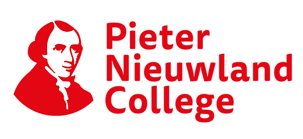

2005
Ik ben Wieke van Bree, 21 jaar oud. Ik studeer Comunicatie en Multimedia design aan de Hogeschool van Amsterdam. Ik zit nu in mijn vierde jaar van de studie en ik ben op zoek naar een stageplek waar ik veel kan leren.
2017-2022

2021-
2022-2023
2023-
2026

Nu
Ik ben geboren in Amsterdam
Ik heb de HAVO afgerond met het vakkenpaket Natuur en Techniek.
Ik werk nog steeds bij de Japanner in de keuken als souschef.
Ik heb in mijn tussenjaar een studiekeuzen project gedaan, waar ik veel over mijzelf heb geleerd.
Ik zit nu in het tweede jaar van het CMD on de HvA.
Ik heb mijn minor Meesterwerken uit de westerse cultuur bij de Hogeschool Utrecht.
Hopelijk stager bij uw bedrijf.
Mijn vaardigheden
- Html
- Css
- Java script
- Figma
- Photoshop
- Illustrator
- InDesign
- Rijbewijs B
Mijn hobby's
Koken
Hockey
Fotografie
Museums
Lezen